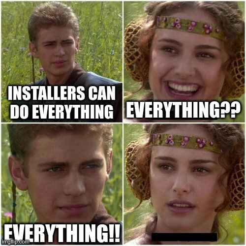

What is packaging and package manager?
Packaging is the process of bundling a software along with the needed extra files (icons, desktop files, configurations etc) needed to install/run it on a user's computer.
Pretty dense, right?
Is this related to installers?
Yes and no!
Installers bundle the software AND and extra tool which copies the software components at the right locations, sets up configurations, ensures the dependencies are fulfilled and of late, even downloading the software itself. Each software brings its own installer.
With packages however, the archive that is downloaded contains ONLY the software. Extracting and copying it to your system locations is done by a package manager.
Why shoud I use a package manager when installer can do everything?
So an installer can do everything? Right?

Thats what you don't want. Its conveniently easy to download a malicious installer from the internet and let it run with administrator privileges on your system, wrecking havoc.
A package manager on the other hand is a trusted software which often (but not always!) comes bundled with your operating system. The externally downloaded software (i.e. packages) are never "run" with superuser privileges. It is the package manager which does all the dirty work.
Is there anything else a package manager does, or is that all?
Much more!
- package managers usually have a list of "sources" from where they will download the relevant package
- so the chances of user doing to a shady website and downloading malware instead of the actual application is greatly reduced
- package managers often include a way to check integrity of downloaded packages
- this safeguards you from mirror highjacking, MITM or simply damaged packages
- package managers can compute the dependency chain, meaning the user does not need to manually install all the pre-requisite libraries for an application
- in the same vein, package managers can find out orphan packages (i.e. libraries which no software is using); this is helpful for system cleanup
- they may also support rollbacks/snapshots
eopkgon Solus natively supports rolling back package operations
How do package managers "install" a software?
The common procedure is to use a package archive and extract it to the relevant system directory. As said before, installers on Windows bundle the logic to copy the files. With package managers however, the work of extracting and copying lies on the package manager.
The package archive contains files organized in proper directories, along with some metadata. We'll see this in depth in further sections. For a very basic package manager, these files need to be extracted to the system directories. However, a lot many times, there must be some post extraction steps that need to be performed. For example, upon upgrading the kernel, initramfs needs to be regenerated. The package manager takes care of these tasks.